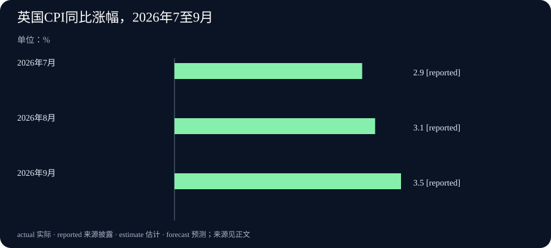

Daily Intelligence｜IBM语音转写扩至七语，英国通胀升至3.5%
2026-10-22｜北京时间｜新闻查阅截止：2026-10-22 07:00:30+08:00，优先观察此前24小时首次公开的材料。英国物价统计的官方发布时间已确认在窗口内；其余主要原文标注10月21日，小时未披露。各条消息的公开时间与统计时期见文末。
Today’s Thesis｜今天的判断
今天的人工智能（AI）更新，正在把产品适用的范围说得更具体：IBM把一款小型语音转写模型扩展为七种语言，NVIDIA则宣布把代理运行软件与独立安全硬件组合起来的参考架构。前者已有明确的多语版本，后者还有计划明年初提供的组件。企业经营与经济环境也有新读数：Thermo Fisher季度收入增长9%，英国9月消费价格同比涨幅升至3.5%，以色列央行维持利率。对采用新工具的企业，语言覆盖、安全安排、业务需求和资金成本，需要分别进入实际选择。技术功能更丰富，是扩大使用的起点；使用范围与经营条件决定接下来怎样推进。这是本报对本期材料的分析。
Executive Summary｜先看三条变化
- 小型语音模型扩展为七种语言：IBM的Granite Speech 5.0 TurboCTC多语更新，可直接输出标点和大小写，也针对房间回声作了训练。转写是把录音变为文字，官方列出的七种语言不含中文。新版本的意义在于增加适用场景，具体录音仍需检查。IBM官方模型说明
- 代理控制延伸到独立硬件：NVIDIA公布OpenShell参考架构，将模型计算、代理任务和安全控制组合起来。参考架构现在可用，其中Sentry安全框架计划2027年初提供，现阶段不能按完整产品已交付来安排部署。NVIDIA正式公告
- 公司季度收入增长，物价与利率各有新变化：Thermo Fisher第三季度收入为121.37亿美元，对照上年同期111.22亿美元；英国9月消费者价格同比上涨3.5%，高于8月3.1%；以色列央行决定维持3.25%的政策利率。它们分别提供经营、消费价格和政策信息。公司财报、英国统计局、以色列央行
AI Daily｜AI与产品
IBM Granite团队10月21日更新了TurboCTC语音转写模型。官方模型说明明确标注这次多语版本的发布日期；原先的英语版本在8月发布。模型保持约4.7亿个参数，也就是训练形成、用来处理输入的数值设置，增加了法语、德语、西班牙语、葡萄牙语、意大利语和日语，连同英语共七种语言。模型说明、团队发布文章
此次更新还可以直接输出标点和大小写，减少文字生成后另加一道格式处理的需要。团队针对混响作了训练；混响是声音在房间内反射、延续，令录音不够清晰的现象。这让更新内容落到实际问题上：录音来自什么语言、文字能否直接阅读、会议室回声怎样影响结果。作者报告了测试改进，但本期没有在客户录音或不同设备上独立重复测试。
官方列出的七种语言不含中文。这款模型处理的是语音转文字，不能把同系列其他模型的翻译功能套用过来。它以Apache 2.0许可提供，开发者可以按许可条件使用和修改；实际采用时，仍应挑选自己常见的口音、背景噪声和专业词，检查文字与原录音是否相符。语言数量增加，并没有替使用者回答这些具体问题。
NVIDIA在10月21日宣布的OpenShell参考架构，则处理代理怎样在企业系统中采取行动。AI代理是会调用工具、按任务执行操作的软件。参考架构是一套说明软件与硬件如何组合的设计安排：一部分负责模型计算，一部分运行代理任务，另有控制层管理访问、隔离和记录。官方称参考架构现在可用，它建立在已有OpenShell运行软件之上。正式新闻稿
这次值得关注的新增安排，是计划把Sentry安全框架放到与主机隔离的专门处理器上。主机是代理实际运行的计算机环境；独立处理器检查网络请求和运行状态，按政策决定哪些访问可以继续，并保留不易被代理改动的记录。这样，执行任务与监督任务不必完全依赖同一套环境。Sentry技术说明
时间安排要保留：Sentry计划2027年初提供。已有DOCA软件库可以用来探索相关基础，但参考架构文档可用、基础库可用和Sentry完整产品可用，是三项不同状态。它也依赖指定硬件、网络路径与部署设置。企业评估这套方案时，应先确认自己能够采用哪部分，再安排权限规则、运行测试和维护责任。本文采用的是厂商发布的设计与计划，没有把它写成独立验证过的安全效果。
Business Daily｜商业与产业
Thermo Fisher Scientific于10月21日公布第三季度结果。这家公司向科学研究及相关产业提供设备和服务。正式报表列出，本季收入为121.37亿美元，上年同期为111.22亿美元；两项金额均从报表的“百万美元”单位换算。两个季度分别截至2026年9月26日和2025年9月27日。官方业绩与报表
公司披露的收入增长为9%，有机收入增长为6%。有机增长是公司为比较原有业务而另算的补充指标，排除了收购、剥离和汇率变化的影响。两种读数一起看，可以追问销售增长来自原有业务，还是也受到业务组合及货币换算影响；但不能仅把两项百分比相减，就分配出每种因素的精确贡献。
按美国通用会计准则，简称GAAP，本季营业利润为22.63亿美元，上年同期19.41亿美元；营业利润率由17.4%升至18.6%。营业利润是在收入中扣除相关经营成本后的会计结果，利润率则表示每一单位收入对应多少营业利润。收入和营业利润同时提高，提供了这家公司本季经营改善的具体证据；现金收支、未来订单和其他企业的情况，还要各看自己的资料。
对读者而言，这份财报更有用的后续问题是：增长能否延续，客户需求与费用怎样变化，原有业务的表现能否保持。本期没有把季度收入归因于今天的语音模型或安全架构。新工具公告与公司已经结束的季度，之间还缺少同一项目使用记录和经营结果的直接联系。
Macro Observation｜宏观观察
英国国家统计局10月21日公布，9月消费者价格指数（CPI）同比上涨3.5%，8月为3.1%。CPI用一篮子消费品和服务观察总体价格变化；同比是与上年同月比较。9月比8月的环比涨幅为0.4%。这里“同比涨幅上移0.4个百分点”与“本月价格环比涨0.4%”，数字恰好相同，含义却不同。英国统计局完整发布
运输，尤其机动车燃料，是整体年涨幅上移的最大向上贡献项，餐饮住宿则是主要抵消项。总体CPI是整个消费篮子的读数，各家庭的实际支出组合会不同。官方还列出其他范围的指标，例如包括自有住房相关成本的CPIH；本期图表只选CPI，保持三个月的比较口径一致。
以色列央行同日决定，将政策利率维持在3.25%。政策利率是央行的一项货币政策安排，会影响金融条件，但并不是所有家庭贷款与存款都自动采用的同一个利率。委员会是在通胀、经济活动、地缘政治和财政环境中作出本次选择。以色列央行决定
该公告引用9月过去12个月通胀为1.6%，这是决定所依据的背景，不能写成10月21日当天刚测得的价格。维持利率是已经公布的决定，下一次如何选择仍取决于之后的信息。本期不把英国价格上升与以色列的政策决定连接成单一因果故事；两地经济条件和政策所面对的问题各不相同。
Signal Dashboard｜信号仪表盘
| 消息 | 本次具体变化 | 后续观察 |
|---|---|---|
| TurboCTC多语更新 | 七种语言转写，原生标点、大小写与抗混响改进 | 实际录音、口音和专业词的表现，七语不含中文 |
| OpenShell参考架构 | 组合代理运行与独立安全硬件 | 当前能部署哪部分，Sentry明年初计划如何落实 |
| Thermo Fisher季度业绩 | 收入121.37亿美元，同比增长9%，有机增长6% | 原有业务需求、费用和持续经营表现 |
| 英国9月CPI | 同比3.5%，高于8月3.1% | 运输等分项变化，以及下一期同口径数据 |
| 以色列利率决定 | 维持3.25% | 通胀、经济活动与财政和安全条件如何变化 |
Deep Insight｜深度观察
采用新工具，要把适用范围和推进节奏写清楚
今天的语音更新有一个容易被忽略的价值：它把采用条件变得更具体。企业可以先问，自己的录音是否属于支持的七种语言，是否需要直接输出标点，会议室回声是否是常见问题。与笼统比较谁的模型更强相比，这些问题更容易形成可执行的试用。若一款工具正好补上常见语言或格式处理的缺口，就值得安排小范围比较；若输入主要是中文，七语更新的意义对这个团队就会不同。这不是模型总体好坏的判断，而是产品能力与实际工作是否相合。
安全参考架构则要求另一种推进节奏。企业今天能阅读设计、使用已有软件和基础库，不代表明年计划提供的组件已经到手。把监督放在独立处理器上，提出了一个清楚的工程方向：即使执行任务的环境出现问题，监督与记录也应尽量继续工作。但落实时，仍要确认硬件、流量路径和组织权限怎样组合。过早把整套未来方案写进当前服务承诺，可能令计划依赖尚未交付的部分；先明确当前可实施的控制，再为后续组件保留接入位置，会让部署安排更具体。这里是本报提出的实施思路，不是厂商已经证明的客户成果。
经济数据也可以帮助企业分清推进节奏，但需要理解变化是怎样产生的。英国运输类价格提供了一个具体例子：9月运输价格环比下降0.4%，去年9月却下降2.3%。今年降得较少，运输类同比涨幅反而从4.6%升至6.6%。也就是说，“本月比上月便宜一点”与“比去年同月的涨幅更高”，可以同时出现。这个机制涉及运输类别，不是说整体CPI本月下降，更不能把它全部套到燃油一个商品上。它说明年度比较受到去年同月这个起点的影响，读涨幅时要同时看今年和去年的变化。
对采购和经营来说，读懂这种比较，比追着一个总百分比调整预算更有用。企业可以列出自己购买的服务和设备，查看价格是否与总体篮子同向，再核对合同调整时间。英国消费价格描述的是消费者支出，并不直接给出研究设备的采购成本。Thermo Fisher的收入和利润则提供了另一家企业已经结束季度的经营记录。9%的报表收入增长与6%的有机增长，让读者有机会继续拆解业务需求、收购剥离和汇率影响；它们无法代替具体客户的订单与预算。
因此，本期适合形成的行动不是统一加速或统一放慢，而是为不同决定写清触发条件。对语音工具，可以用常见录音测试是否减少人工整理；对安全架构，可以先确认当前可用部件和未来依赖；对企业需求，可以沿着相同口径追踪收入、利润与后续订单；对价格和资金安排，则继续观察相关类别及央行的新信息。这样，推进的快慢来自具体任务和条件，而不是把每条新闻都理解成必须立即改变方向的信号。
Tomorrow Watch｜明日值得追踪
- TurboCTC多语版本在不同口音、回声和专业词录音中，是否减少人工修改与格式处理。
- OpenShell参考架构的当前部署说明，是否清楚区分现有能力和Sentry后续可用安排。
- Thermo Fisher的客户需求、原有业务表现和费用变化，能否支持季度增长延续。
- 英国下一期同口径价格，以及运输与其他类别的变化是否继续推动年度涨幅。
- 以色列央行之后如何评价通胀、经济活动和财政、安全条件，避免把本次维持利率视为未来保证。
One Chart｜一张图
下图展示英国2026年7月至9月CPI同比涨幅：7月2.9%、8月3.1%、9月3.5%。三项数字来自同一份英国统计局发布的表1，分别与上年相同月份比较，单位为%。
图中的 reported 表示“来源披露的数字”。这些是同比涨幅，不是相邻月份的环比、价格指数水平或未来预测。8月至9月上移0.4个百分点，表示年度涨幅的变化；它不表示可以把三个月的同比涨幅直接相加，也不代表每个家庭的支出都按同样幅度变化。图表来源

Quote of the Day｜今日引用
“Wisely and slow. They stumble that run fast.”
— William Shakespeare（威廉·莎士比亚），《罗密欧与朱丽叶》第二幕第三场，劳伦斯神父台词。剧作初印于1597年，本句采用Folger莎士比亚图书馆的现代编订本；中文为本报译文。原剧正文
中文：明智而缓行，跑得太快的人会跌倒。
罗密欧催促神父出发，为自己和朱丽叶主持婚礼，神父以这句话劝他不要急躁。这是戏剧人物的台词，不是莎士比亚的一次演讲。联系今天的新闻，它提醒我们把速度与条件一起考虑；如何用于技术和经营选择，属于本报的编辑感想。
Action Items｜今天值得思考什么
- 支持的语言适合自己的录音吗？ 先核对七语清单，再用常见口音、噪声和专业词比较文字与录音，记录人工修改工作。
- 今天能部署哪一部分？ 把现有软件、硬件要求和2027年初计划提供的Sentry分开列出，再安排权限与维护责任。
- 增长来自原有业务吗？ 同时看Thermo Fisher报表收入和有机增长的定义，继续追踪客户需求、费用与后续订单。
- 涨幅和哪个时期比较？ 阅读CPI时区分同比、环比和百分点变化，必要时同时查看今年与去年同月的价格移动。
- 什么新信息会改变安排？ 为采购和资金决定记录下一项观察条件，不把一次财报、一次政策维持或未来产品计划视为长期保证。
信息边界
本期研究截止时间为2026-10-22T07:00:30+08:00，优先观察窗口为2026-10-21T07:00:30+08:00至截止时间。来源公开时间与事实覆盖的时期分别记录如下。
| 来源 | 已核验的公开时间 | 对应时期或状态 |
|---|---|---|
| IBM TurboCTC多语版 | 官方模型说明明确2026-10-21，小时未披露 | 本次多语更新；原英语版本为8月背景 |
| NVIDIA OpenShell参考架构 | 官方公告2026-10-21，小时未披露 | 参考架构已宣布可用，Sentry计划2027年初提供 |
| Thermo Fisher财报 | 官方页2026-10-21，小时未披露 | 本年截至9月26日第三季度，与上年同期比较 |
| 英国CPI | 官方记录10月21日07:00英国夏令时，即北京时间14:00，确认在窗口内 | 2026年9月价格，图中另列7月和8月同口径数据 |
| 以色列央行决定 | 官方公告2026-10-21，小时未披露 | 当次利率决定；9月通胀作为背景 |
与前两期聚焦的蛋白实验、共享AI服务和软件权限不同，本期技术新增是七语转写更新与新的部署参考架构。企业与宏观部分采用新公布的科学服务企业财报、英国消费价格和以色列本次政策决定。
只有日期、没有可核验小时的原文，不能据此确证严格处于24小时窗口。技术功能与效果来自厂商披露，未在本报独立复现；财报、统计和政策决定按各自口径引用。文中的实际工作建议、假设和跨事件联系，是本报分析，不是来源已经证明的共同因果关系。